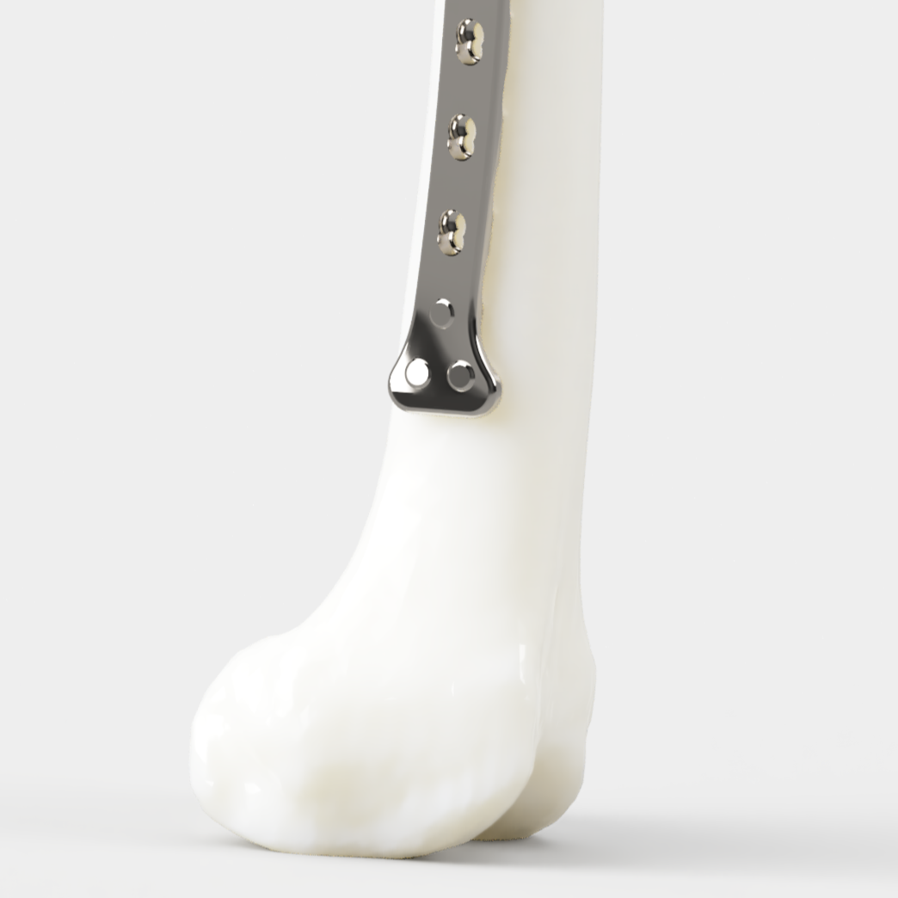
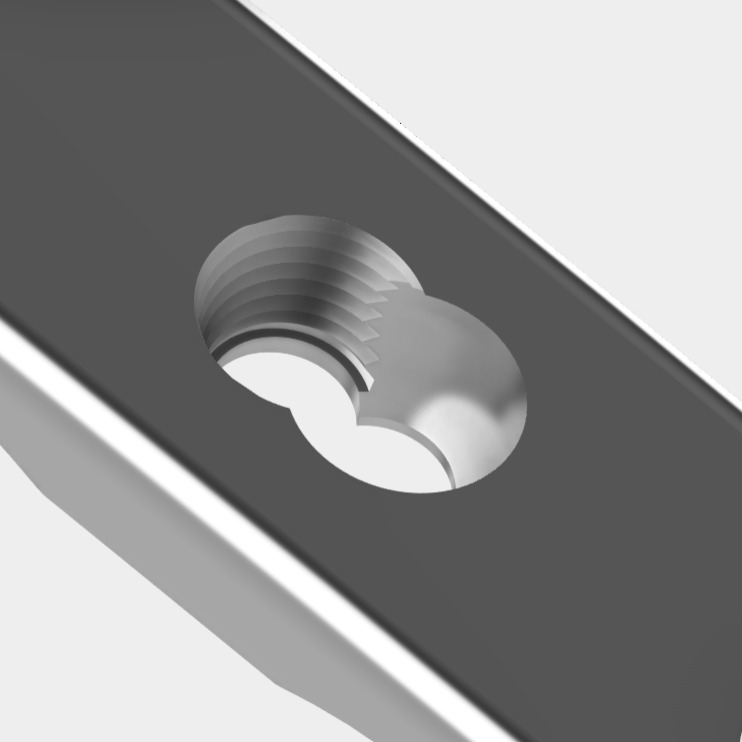
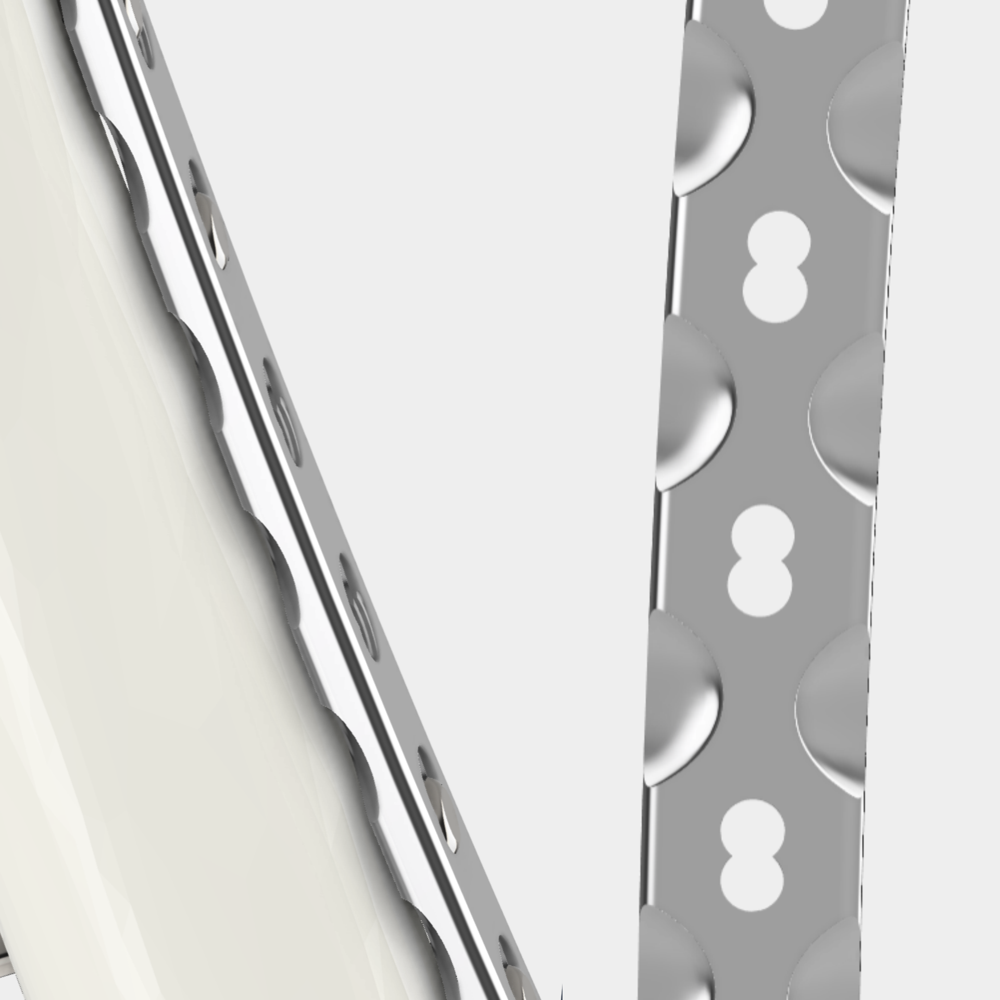
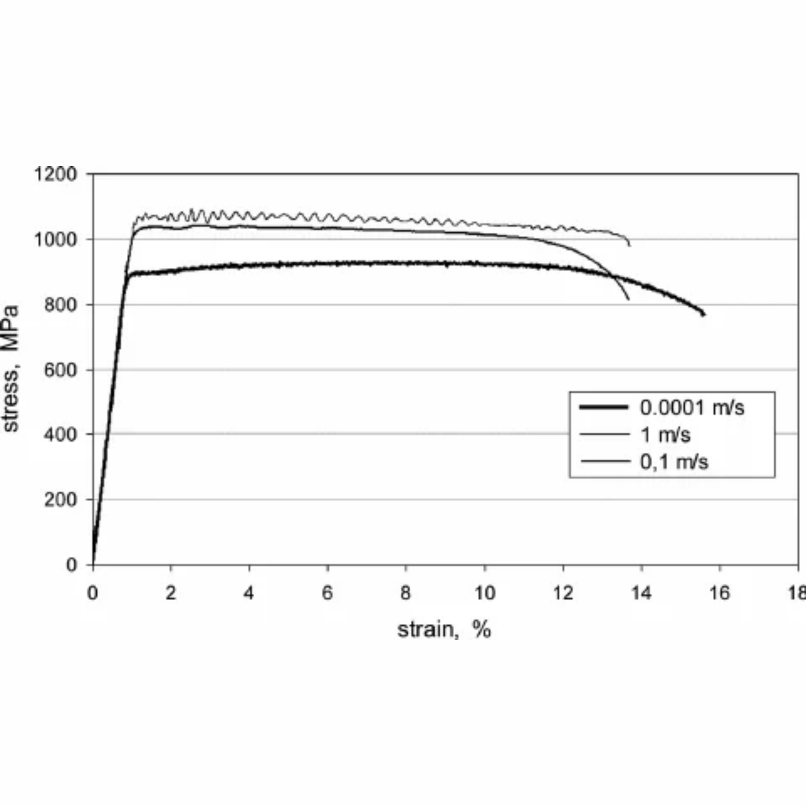

The objective of this CAD project was to design a fracture plate tailored to the anatomy of a paediatric femur, which differs significantly from a mature femur. Design choices were made with both physiology and surgical usability in mind.
Designed for a 35 cm femur, this plate corresponds to the typical anatomy of an 8-to 9-year-old child [1]. A child in this age range typically weighs between 25 to 29 kilograms [2] [3]. The implant was designed for the walking forces of a 29 kg child, calculated by downscaling multi-axis adult gait telemetry data, with a safety factor of 2.0 [4].
The implant architecture is explicitly engineered to navigate the clinical boundaries of paediatric anatomy, maximising mechanical stabilisation while preserving natural bone healing mechanisms.
| Implant Feature & Rationale Specification | CAD Reference |
|---|---|
Distal Anchor ConfigurationChildren have active growth plates (physis) at their joints. The distal physis is located where the head of the adult fracture plate would normally sit. For a child, the head must be positioned proximal to the physis so that the screws do not damage it.
|
 |
Locking Compression Plate Combi HolesTo complement this configuration, the plate shaft utilises LCP Combi Holes. This hybrid geometry integrates a threaded section for fixed-angle locking screws with dynamic compression cortical screws to achieve optimal load management.
|
 |
Scalloped UndersideTo further optimise the implant-bone interface, the underside of the plate shaft is scalloped. This reduces the contact area between the metal implant and the underlying skeleton to provide maximum vascular protection.
|
 |
Material Selection: Titanium 6Al-4VTo achieve the optimal balance between high loading strength and biological compatibility, the implant is manufactured from medical-grade Titanium 6Al-4V alloy. This material selection ensures advanced structural payload survival.
|
 |
[1] Chen C, Milbrandt TA, Babadi E, Duong SQ, Larson DR, Shaughnessy WJ, et al. Normative Femoral and Tibial Lengths in a Modern Population of Twenty-First-Century U.S. Children. Journal of Bone and Joint Surgery [Internet]. 2023 Jan 19 [cited 2026 Oct 5];105(6):468–78. Available from: https://www.med.uvm.edu/docs/jc_peds_may_2023/orthopaedics-documents/jc_peds_may_2023.pdf?sfvrsn=be39953a_0 [2] UK Growth Chart for Girls (2–18 years) with Additional Guidance for Pubertal Assessment [Internet]. Harlow, UK: Royal College of Paediatrics and Child Health (RCPCH); 2012 [cited 2026 Oct 5]. Available from: https://www.rcpch.ac.uk/sites/default/files/Girls_2-18_years_growth_chart.pdf [3] UK Growth Chart for Boys (2–18 years) with Additional Guidance for Pubertal Assessment [Internet]. Harlow, UK: Royal College of Paediatrics and Child Health (RCPCH); 2012 [cited 2026 Oct 5]. Available from: https://www.rcpch.ac.uk/sites/default/files/Boys_2-18_years_growth_chart.pdf [4] Bergmann G, Bender A, Dymke J, Duda G, Damm P. Standardized Loads Acting in Hip Implants. Pérez MA, editor. PLOS ONE. 2016 May 19;11(5):e0155612. Available from: https://journals.plos.org/plosone/article?id=10.1371/journal.pone.0155612#pone-0155612-t005 [5] Marin E, Lanzutti A. Biomedical applications of titanium alloys: A comprehensive review. Materials [Internet]. 2024 Jan 1 [cited 2026 Oct 15];17(1):114. Available from: https://www.mdpi.com/1996-1944/17/1/114